Authoring Techniques for Accessible Office Documents: OpenOffice Impress (v3.2)
Date of Current Version: 04 Feb 2011
Latest Version (HTML): http://inclusivedesign.ca/accessible-office-documents/ooimpress
Quick Reference
- Usage Notes
- Technique 1. Use Accessible Templates
- Technique 2. Set Document Language
- Technique 3. Use Built-In Layout and Styling Features
- Technique 4. Set a Logical Tab Order
- Technique 5. Use Slide Notes
- Technique 6. Provide Text Alternatives for Images and Graphical Objects
- Technique 7. Use Built-In Structuring Features
- Technique 8. Create Accessible Charts
- Technique 9. Make Content Easier to See
- Technique 10. Make Content Easier to Understand
- Technique11. Check Accessibility
- Technique 12. Use Accessibility Features when Saving/Exporting to Other Formats
- Technique 13. Consider Using Accessibility Support Applications/Plugins
- Accessibility Help
- References and Resources
- Acknowledgments
Usage Notes
At the time of testing (September 20, 2010), OpenOffice Impress provides a set of accessibility features that is sufficient to enable the production of accessible digital office documents. However, OpenOffice Impress does not include an accessibility checking feature.
What’s an “Office Document”?
You should use these techniques when you are using Impress to create documents that are:
- Intended to be used by people (i.e., not computer code),
- Text-based (i.e., not simply images, although they may contain images),
- Fully printable (i.e., where dynamic features are limited to automatic page numbering, table of contents, etc. and do not include audio, video, or embedded interactivity),
- Self-contained (i.e., without hyperlinks to other documents, unlike web content), and
- Typical of office-style workflows (Reports, letters, memos, budgets, presentations, etc.).
If you are creating forms, web pages, applications, or other dynamic and/or interactive content, these techniques will still be useful to you, but you should also consult the W3C-WAI Web Content Accessibility Guidelines (WCAG 2.0) because these are specifically designed to provide guidance for highly dynamic and/or interactive content.
File Formats
The default file format for Impress is ODF Presentation (ODP).
In addition, Impress offers many other presentation processor and web format saving options. Most of these have not been checked for accessibility, but some information and/or instructions are available for the following formats in Technique 12:
- MS PowerPoint (PPT)
- HTML
Document Conventions
We have tried to formulate these techniques so that they are useful to all authors, regardless of whether they use a mouse. However, for clarity there are several instances where mouse-only language is used. Below are the mouse-only terms and their keyboard alternatives:
- *Right-click: To right-click with the keyboard, select the object using the Shift+Arrow keys and then press either (1) the “Right-Click” key (some keyboard have this to the right of the spacebar) or Shift+F10.
Disclaimer and Testing Details:
Following these techniques will increase the accessibility of your documents, but it does not guarantee accessibility to any specific disability groups. In cases where more certainty is required, it is recommended that you test the office documents with end users with disabilities, including screen reader users.
The application-specific steps and screenshots in this document were created using OpenOffice Impress (ver. 3.2.1, Windows XP, Aug. 2010) while creating an ODT document. Files can also be easily saved as other file formats (see Technique 12).
Technique 1. Use Accessible Templates
All office documents start with a template, which can be as simple as a blank standard-sized page or as complex as a nearly complete document with text, graphics and other content. For example, a “Meeting Minutes” template might include headings for information relevant to a business meeting, such as “Actions” above a table with rows to denote time and columns for actions of the meeting.
Because templates provide the starting-point for so many documents, accessibility is critical. If you are unsure whether a template is accessible, you should check a sample document produced when the template is used (see Technique 11).
OpenOffice Impress’s default template for new documents is a blank presentation. The basic installation also includes blank business card and blank label templates. These are all accessible by virtue of being blank. As well, you may create your own templates.
To create an accessible template
- Create a new document
- Ensure that you follow the techniques in this document
- When you are finished you should also check the accessibility of the document (see Technique 11)
- Go to menu item: File > Properties
- Use the Title and/or Comments to indicate the accessibility status of the template. Using Title (e.g., “Accessible Memo Template”) will increase the prominence of the accessibility status because this is used in place of the template’s file name. Comments can be used to add more information if necessary (e.g., “This memo template has been checked for accessibility.”).
- Close the dialog with OK
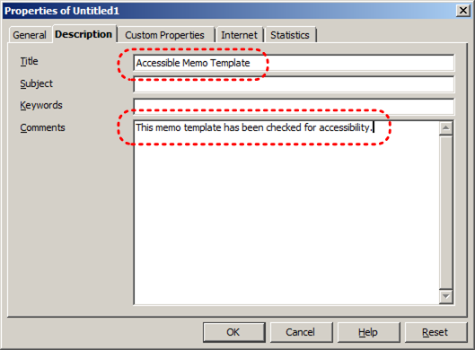
- Go to menu item: File > Templates > Save (Shift+F11)
- In the New Template box, type a name for the template
- Select the category you would like to save it in, under Categories
Note: the category is simply the folder into which you are saving the template - Close the dialog with OK
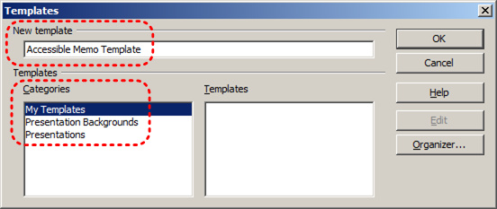
To select an accessible template
Note: Only use these steps if you have an accessible template available (e.g. that you previously saved). Otherwise, simply open a new (blank) document.
- Go to menu item: File > New > Templates and Documents
- Select the Templates icon
- Select a template document from the list
Note: A properties pane appears on the right side of the window, where you can read the document properties (Title, By, Date, Modified by, Modified on, Description, and Size). If you placed information about the accessibility of the template in the Title and/or Comments when you created the template (see above), this will be displayed in the Title and/or Description, respectively. - Select Open
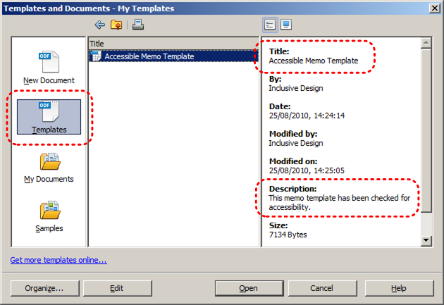
- A new document based on the template will be displayed. If you have chosen an accessible template, the document will be accessible at this point. As you add your content (e.g., text, images, etc.), ensure that you consult the sections that follow to preserve accessibility.
Technique 2. Set Document Language
In order for assistive technologies (e.g., screen readers) to be able to present your document accurately, it is important to indicate the natural language of the document. If a different natural language is used for a paragraph or selected text, this also needs to be clearly indicated.
To select a language for the whole document
- Go to menu item: Tools > Options
- Select Language Settings > Languages
- Under Default languages for documents, select the document language for all newly created documents
Note: If you mark For the current document only, your choice will only apply to the current document. - Close the dialog with OK
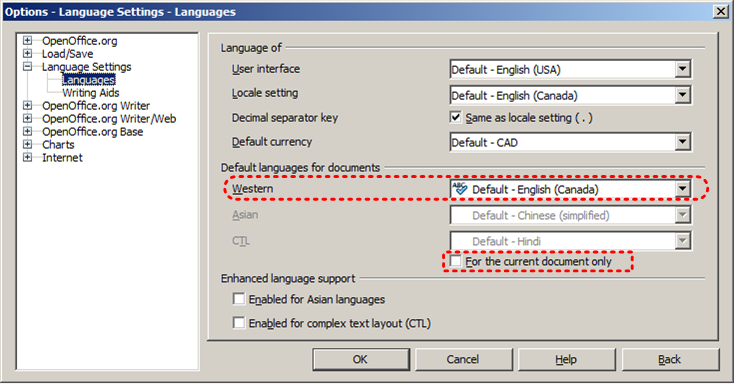
To apply a language directly to selected text
- Select the text to which you want to apply a language
- Go to menu item: Format > Character
- Select the Font tab
- Select the Language and click OK
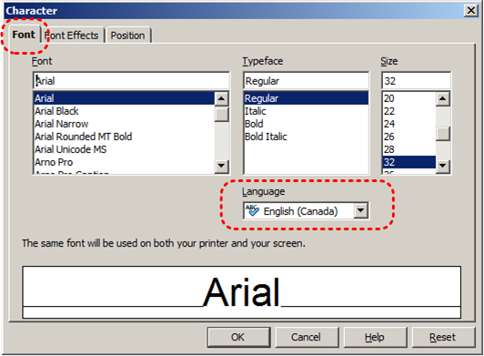
Technique 3. Use Built-In Layout and Styling Features
3.1 Use Built-In Slide Layouts
Instead of creating each slide in your presentation by starting from a blank slide, check whether there is a suitable built-in layout.
Note: The built-in layouts can be more accessible to users of assistive technologies because they technologies sometimes read the floating items on the slide in the order that they were placed on the slide. The built-in layouts have usually taken this into account (e.g., “Title” first followed by other items, left to right and from top to bottom). If you create slide layouts from scratch, it is sometimes difficult to keep track of the order elements were placed.
To apply “true layout” to a slide
- Select the slide in the Slides pane on the left
- Go to menu item: Format > Slide Layout…
- Go to Tasks pane on the right
- Select layout under the Layouts section
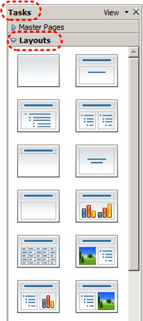
3.2 Use Quick Styles
You should make use of the quick styles that are included with the office application (e.g., pre-defined heading fonts and characters) before creating your own styles or using the character formatting tools directly. Quick styles help your readers understand why something was formatted in a given way, which is especially helpful when there are multiple reasons for the same formatting (e.g., it is common to use italics for emphasis, Latin terms and species names).
Note: While office application suites support headings in much the same way, the named styles often differ.
Impress provides quick styles for theme fonts, but applying these directly to text does not define the text as a heading or body font. To define the font for headings and body text, you need to apply these characteristics to the presentation theme.
Impress provides named styles for “Heading”, “Title”, etc., but not for strong and emphasis.
To use default named styles
- Go to menu item: Format > Styles and Formatting (F11)
- Select the Graphic Styles icon
- Select the named style
- Click the Bucket icon in the element to which you would like to apply the named style
- Close the Styles and Formatting dialog
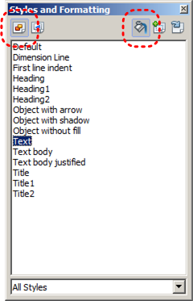
To change the text size for a default named style
- Go to menu item: Format > Styles and Formatting (F11)
- Select the style to modify from the list
- Right click and select: Modify…
- Select the Font tab
- Select a font size under Size
- Exit with OK
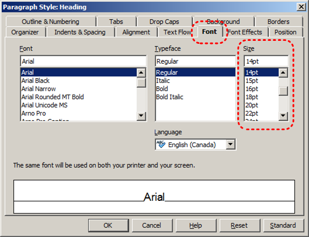
3.3 Customize Using Master Slides
If a layout must be customized, it is recommended that Master Slides be used.
Every slide layout in a presentation is defined by its master slide. A master slide determines the formatting style for various elements of the slide layout. This includes font styles, character formatting, and the positioning of elements. Essentially, each master slide acts as a design template for the slide layout.
If you edit any aspect of the slide layout in the master slide, the change will affect all slides that were created based on it. For this reason, it is good practice to edit the master slide and use the slide layouts before building individual slides. It is essential that you create and use master slides that meet the accessibility requirements outlined in this document.
To modify a Master Slide
- Go to menu item: View > Master > Slide Master
- Edit the master slide, ensuring it aligns with the guidelines in this document
Technique 4. Set a Logical Tab Order
Many presentation applications create content composed almost exclusively of "floating" objects. This means that they avoid the transitions between in-line content and secondary "floating" objects (text boxes, images, etc.) that can cause accessibility issues in word processors.
However, when you are working with "floating" objects, it is important to remember that the way objects are positioned in two dimensions on the screen may be completely different from how the objects will be read by a screen reader or navigated using a keyboard. The order that content is navigated sequentially is called the "Tab Order" because often the "Tab" key is used to navigate from one "floating" object to the next.
Tips for setting a logical “tab order” for "floating" objects
- The tab order of floating objects is usually from the “lowest” object on the slide to the “highest”.
- Because objects automatically appear “on top” when they are inserted, the default tab order is from the first object inserted to the last. However, this will change if you use features such as “bring to front” and “send to back”.
- The slide’s main heading should be first in the tab order.
- Headings should be placed in the tab order immediately before the items (text, diagrams, etc.) for which they are acting as a heading.
- Labels should be in the reading order placed immediately before the objects that they label.
- For simple slide layouts, it may be possible to simply insert objects in a logical tab order.
- For more complex layouts, it may be easier to simply to create the slide as usual and then set the tab order (see below).
To set the tab order
- Right-click* the object
- Select Arrange > Bring to Front, Bring Forward, Send Backward, or Send to Back
Technique 5. Use Slide Notes
A useful aspect of presentation applications is the facility to add notes to slides, which can then be read by assistive technologies. You can use these slide notes to explain and expand on the contents of your slides in text format. Slide notes can be created as you build your presentation.
To add notes to your slides
- Go to menu item: View > Notes Page
- In the text box positioned at the bottom of the page, select Click to add notes
- Enter notes to accompany the slide
Technique 6. Provide Text Alternatives for Images and Graphical Objects
When using images or other graphical objects, such as charts and graphs, it is important to ensure that the information you intend to convey by the image is also conveyed to people who cannot see the image. This can be accomplished by adding concise alternative text to of each image. If an image is too complicated to concisely describe in the alternative text alone (artwork, flowcharts, etc.), provide a short text alternative and a longer description as well.
Tips for writing alternative text
- Try to answer the question "what information is the image conveying?"
- If the image does not convey any useful information, leave the alternative text blank
- If the image contains meaningful text, ensure all of the text is replicated
- Alternative text should be fairly short, usually a sentence or less and rarely more than two sentences
- If more description is required (e.g., for a chart or graph), provide a short description in the alternative text (e.g., a summary of the trend) and more detail in the long description, see below
- Test by having others review the document with the images replaced by the alternative text
Tips for writing longer descriptions
- Long descriptions should be used when text alternatives (see above) are insufficient to answer the question "what information is the image conveying?"
- In some situations, the information being conveyed will be how an image looks (e.g., an artwork, architectural detail, etc.). In these cases, try to describe the image without making too many of your own assumptions.
- One approach is to imagine you are describing the image to a person over the phone
- Ensure that you still provide concise alternative text to help readers decide if they are interested in the longer description
Alternatively, you can include the same information conveyed by the image within the body of the document, providing the images as an alternate to the text. In that case, you do not have to provide alternate text within the image.
To add alternative text to images
- Right-click on object
- Select Description... option
- Enter alternative text in the Title box
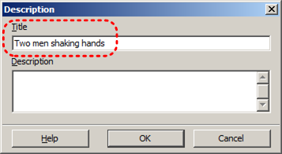
To add long descriptions to images
- Right-click on object
- Select Description... option
- Enter description in Description box
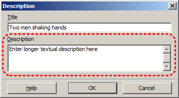
Technique 7. Use Built-In Structuring Features
7.1 Tables
When using tables, it is important to ensure that they are clear and appropriately structured. This helps all users to better understand the information in the table and allows assistive technologies (e.g., screen readers) to provide context so that the information within the table can be conveyed in a meaningful way.
Tips for tables
- Only use tables for tabular information, not for formatting.
- Use “real tables” rather than text formatted to look like tables using the TAB key or space bar. These will not be recognized by assistive technology.
- Keep tables simple by avoiding merged cells and dividing complex data sets into separate smaller tables, where possible.
- If tables split across pages, set the header to show at the top of each page. Also set the table to break between rows instead of in the middle of rows.
- Create a text summary of the essential table contents. Any abbreviations used should be explained in the summary.
- Table captions or descriptions should answer the question "what is the table's purpose and how is it organized?" (e.g., "A sample order form with separate columns for the item name, price and quantity").
- Table cells should be marked as table headers when they serve as labels to help interpret the other cells in the table.
- Table header cells labels should be concise and clear.
- Ensure the table is not “floating” on the page (see Technique 4).
To add a table with headings
- Go to menu item: Insert > Table…
- Specify the number of columns and rows in the new table
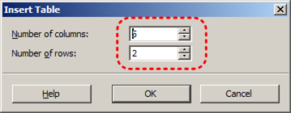
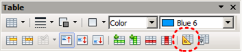
7.2 Lists
When you create lists, it is important to format them as “real lists”. Otherwise, assistive technologies will interpret your list as a series of short separate paragraphs instead of a coherent list of related items.
To create an ordered or unordered list
- Go to menu item: Format > Bullets and Numbering
- For unordered lists, select an option from the Bullets tab
- For ordered lists, select an option from the Numbering Type tab
To modify list styles
- Go to menu item: Format > Bullets and Numbering
- In the Bullets and Numbering dialog, select the Customize tab
- Modify the list style by making selections from the available formatting options
- Select OK
Note: This only modifies that instance of the list style.
7.3 Columns
Use Columns feature for placing text in columns.
Note: Because columns can be a challenge for users of some assistive technologies, consider whether a column layout is really necessary.
7.4 Document Title
In case the document is ever converted into HTML, it should be given a descriptive and meaningful title.
To change the title of the current document
- Go to menu item: File > Properties
- Select the Description tab
- Type the new title in the Title box and click OK
Note: The Title defined in the properties is different than the file name. It is also unrelated to the template name, discussed above.
Technique 8. Create Accessible Charts
Charts can be used to make data more understandable for some audiences. However, it is important to ensure that your chart is as accessible as possible to all members of your audience. All basic accessibility considerations that are applied to the rest of your document must also be applied to your charts and the elements within your charts. For example, use shape and color, rather than color alone, to convey information. As well, some further steps should be taken to ensure that the contents are your chart are appropriate labeled to give users reference points that will help them to correctly interpret the information.
To create a chart
- Select a slide layout with a placeholder for data charts (see Technique 3.1)
- Double-click* the center of the placeholder to insert the data chart
- Right-click* the chart and select Chart Data Table…
- Update the data table with the data you would like to display
- Close the data table
To add titles and labels
- Double-click* the chart to access the chart menus
- Go to menu item: Insert > Titles
- Update the relevant fields and select OK
- Go to menu item: Insert > Data Labels
- Configure your data label selections and select OK
To change to a different predefined Chart Type
- Double-click* the chart to access the chart menus
- Go to menu item: Format > Chart Type
- In the Chart Type dialog, select a predefined chart type and style
- Select OK
Other Chart Considerations
- When creating line charts, use the formatting options to create different types of dotted lines to facilitate legibility for users who are color blind
- When creating bar charts, it is helpful to apply textures instead of color to differentiate the bars
- Change the default colors to a color safe or gray-scale palette
- Use the formatting options to change predefined colors, ensuring that they align with sufficient contrast requirements (see Technique 9.2)
Technique 9. Make Content Easier to See
9.1 Format of Text
When formatting text, especially when the text is likely to be printed, try to:
- Use font sizes between 12 and 18 points for body text.
- Use fonts of normal weight, rather than bold or light weight fonts. If you do choose to use bold fonts for emphasis, use them sparingly.
- Use standard fonts with clear spacing and easily recognized upper and lower case characters. Sans serif fonts (e.g., Arial, Verdana) may sometimes be easier to read than serif fonts (e.g., Times New Roman, Garamond).
- Avoid large amounts of text set all in caps, italic or underlined.
- Use normal or expanded character spacing, rather than condensed spacing.
- Avoid animated or scrolling text.
But can’t users just zoom in? Office applications do typically include accessibility features such as the ability to magnify documents and support for high contrast modes. However, because printing is an important aspect of many workflows and changing font sizes directly will change documents details such the pagination, the layout of tables, etc., it is best practice to always format text for a reasonable degree of accessibility.
9.2 Use Sufficient Contrast
The visual presentation of text and images of text should have a contrast ration of at least 4.5:1. To help you determine the contrast, here are some examples on a white background:
- Very good contrast (Foreground=black, Background=white, Ratio=21:1)
- Acceptable contrast (Foreground=#767676, Background=white, Ratio=4.54:1)
- Unacceptable contrast (Foreground=#AAAAAA, Background=white, Ratio=2.32:1)
Also, always use a single solid color for a text background rather than a pattern.
In order to determine whether the colors in your document have sufficient contrast, you can consult an online contrast checker, such as:
- Juicy Studio: Luminosity Color Contrast Ratio Analyzer
- Joe Dolson Color Contrast Spectrum Tester
- Joe Dolson Color Contrast Comparison
9.3 Avoid Using Color Alone
Color should not be used as the only visual means of conveying information, indicating an action, prompting a response, or distinguishing a visual element. In order to spot where color might be the only visual means of conveying information, you can create a screenshot of the document and then view it with online gray-scale converting tools, such as:
9.4 Avoid Relying on Sensory Characteristics
The instructions provided for understanding and operating content should not rely solely on sensory characteristics such as the color or shape of content elements. Here are two examples:
- Do not track changes by simply changing the color of text you have edited and noting the color. Instead use PowerPoint 2010’s “Track Changes” feature to track changes.
- Do not distinguish between images by referring to their appearance (e.g. “the bigger one”). Instead, label each image with a figure number and use that for references.
9.5 Avoid Using Images of Text
Before you use an image to control the presentation of text (e.g., to ensure a certain font or color combination), consider whether you can achieve the same result by styling “real text”. If this is not possible, as with logos containing stylized text, make sure to provide alternative text for the image following the techniques noted, above.
9.6 Avoid Transitions
Transitions between slides and elements in each slide (e.g., bullets in a list flying onto the screen) can be distracting to users with disabilities. It can also cause assistive technologies to read the slide incorrectly. For these reasons, it is best to avoid transitions altogether.
Technique 10. Make Content Easier to Understand
10.1 Write Clearly
By taking the time to design your content in a consistent way, it will be easier to access, navigate and interpret for all users:
- Whenever possible, write clearly with short sentences.
- Introduce acronyms and spell out abbreviations.
- Avoid making the document too “busy” by using lots of whitespace and by avoiding too many different colors, fonts and images.
- If content is repeated on multiple pages within a document or within a set of documents (e.g., headings, footings, etc.), it should occur consistently each time it is repeated.
10.2 Provide Context for Hyperlinks
Hyperlinks are more effective navigation aids when the user understands the likely result of following the link. Otherwise, users may have to use trial-and-error to find what they need.
To help the user understand the result of selecting a hyperlink, ensure that the link makes sense when read in the context of the text around it. For example, while it would be confusing to use “more information” as a link by itself on a page, it would be fine to use “more information” as a link in the following sentence: “The airport can be reached by taxi or bus (more information).”
To make the address of hyperlink clear when printing, you may wish to include the address in brackets following the descriptive text of the hyperlink.
To change link text
- Type the link address and Enter
- Highlight the link
- Go to menu item: Edit > Hyperlink…
- In the Hyperlink dialog, type meaningful descriptive text of the hyperlink in the field labeled Text
- Select Apply
- Select Close
10.3 Accessible Presentations
It is important to consider accessibility before, during, and after presentations. Below is a helpful link with guidance on how to make presentations accessible to all:
- “How to Make Presentations Accessible to All” (Source: W3C-WAI Draft)
Technique 11. Check Accessibility
At this time, OpenOffice Impress does not offer a mechanism to identify potential accessibility errors in your document prior to publishing. [Tested: September 20th, 2010]
In order to get some indication of the accessibility of your document or template (see Technique 1), then you may consider saving the file into HTML or PDF in order to perform an accessibility check in one of those formats, as described below.
To evaluate HTML accessibility
If you wish to check the accessibility of your document or template (see Technique 1), one option is to save it into HTML format and use one of the web accessibility checkers available online. Such as:
To evaluate PDF accessibility
If you saved your document in tagged PDF format, you can use the following tools and steps to evaluate the accessibility of the PDF document:
- Adobe Acrobat Professional
- PDF Accessibility Checker (PAC) – a free alternative provided by “Access for all”
To evaluate PDF accessibility in Adobe Acrobat Professional
- Go to menu item: Advanced > Accessibility > Full Check…
- In the Full Check dialog, select all the checking option
- Select the Start Checking button
Technique 12. Use Accessibility Features when Saving/Exporting to Other Formats
In some cases, additional steps must be taken in order to ensure accessibility information is preserved when saving/exporting to formats other than the default.
PDF documents are not always accessible. Accessible PDF documents are often called “Tagged PDF” because they include “tags” that encode structural information required for accessibility. To evaluate the accessibility of your PDF document, see Technique 11.
- Go to menu item: File > Export as PDF
- Check box labeled Tagged PDF
- Click Export
- Enter name and save location
- Select Save
Note: You must ensure this option is selected in the PDF Options window dialog box before using PDF icon on menu bar.
HTML
- Open the presentation that you want to save in HTML format.
- Go to menu item: File > Export
- Set the File type to HTML Document (OpenOffice.org Impress) (.html;.htm).
- Enter a File name
- Click Export
- Follow the instructions in the HTML Export Wizard
- Check the HTML file for accessibility (see Technique 11 )
To clean up your HTML file
- Remove unnecessary styles, line breaks, etc.
- Remove unnecessary id, class, and attributes
- Remove font tags
- Remove styles in the <head> tag
- Ensure the <th> tags have a scope attribute
- Remove <p> tags nested inside <th> and <td> tags
- Check for accessibility (see Technique 11 )
Note: you may wish to use HTML editors or utilities to help with this process.
Technique 13. Consider Using Accessibility Support Applications/Plugins
Disclaimer: This list is provided for information purposes only. It is not exhaustive and inclusion of an application or plug-in on the list does not constitute a recommendation or guarantee of results.
The following accessibility related plug-ins and support are available for OpenOffice Impress:
- PowerTalk – an accessibility tool that provides a good approximation of how presentations will sound with a screen reader.
- OOo2GD – an extension that allows you to export, update and import documents, spreadsheets and presentations between OpenOffice.org applications and Google docs.
Accessibility Help
If you are interested in what features are provided to make using OpenOffice Impress more accessible to users, documentation is provided in the Help system:
- Go to menu item: Help > OpenOffice.org Help (F1)
- Enter “accessibility” as the Search Term
References and Resources
- OpenOffice Impress Help
- WebAim: OpenOffice.org and Accessibility [http://webaim.org/techniques/ooo/#writer]
- GAWDS Writing Better Alt Text [http://www.gawds.org/show.php?contentid=28]
- OpenOffice.org 3 Impress Guide
Acknowledgments
This document was produced as part of the Accessible Digital Office Document (ADOD) Project (http://inclusivedesign.ca/accessible-office-documents).
This project has been developed by the Inclusive Design Research Centre, OCAD University as part of an EnAbling Change Partnership project with the Government of Ontario and UNESCO (United Nations Educational, Scientific and Cultural Organization).


Accessible Digital Office Documents (ADOD) Project by Inclusive Design Research Centre (IDRC) is licensed under a Creative Commons Attribution-ShareAlike 3.0 Unported License.